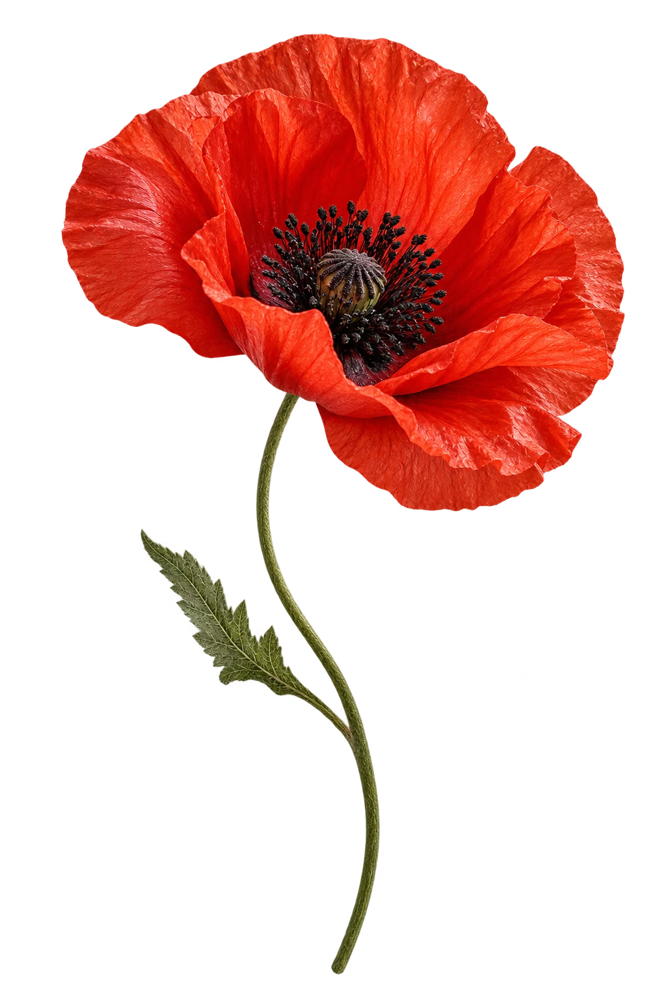

НЕ ТОЛЬКО ПО ПОВОДУФЛОРИСТИКА КАК ВЫСКАЗЫВАНИЕ
Чувства.
Без лишних
слов.
Букеты с характером.
Для больших признаний
и маленьких «просто так».

PapaverКрасота быть собой.
01 / ВЫБРАТЬ ЧУВСТВО
У каждого букета
свой голос.
Тихий комплимент или громкое признание —
начни с того, что хочется сказать.
02 / БОЛЬШЕ, ЧЕМ БУКЕТ
Цветы становятся
частью истории.
Ужин на двоих, свадьба, открытие пространства.
Задумываем цветы вместе с событием:
от одного стебля до целой комнаты.
03 / МАСТЕРСКАЯ «АЛЫЙ»
Не исправляем природу.
Подчёркиваем характер.
Любим неровные стебли, неожиданные сочетания и цветы в их собственном ритме. Собираем свободно — так, чтобы в букете оставалось место для жизни.
«Алый» — вымышленная цветочная мастерская. Портфолио-концепт verver. Заказы и платежи не принимаются.